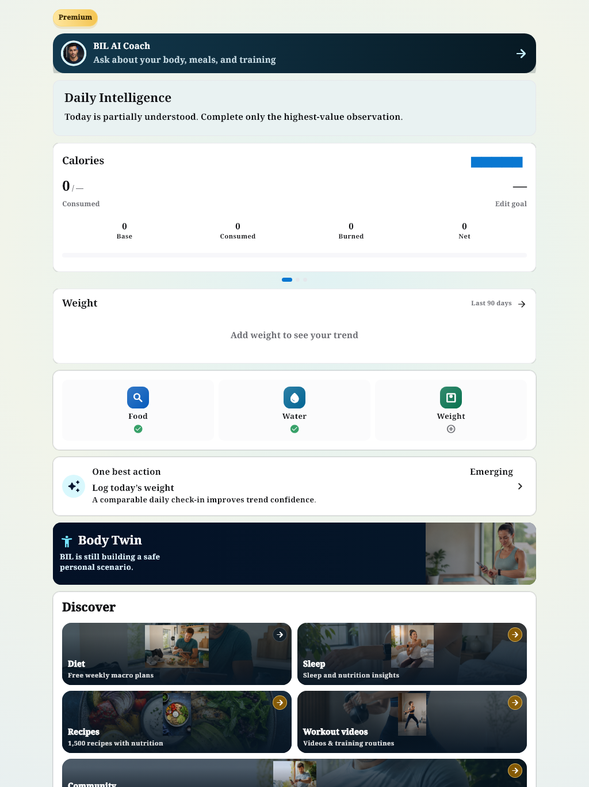
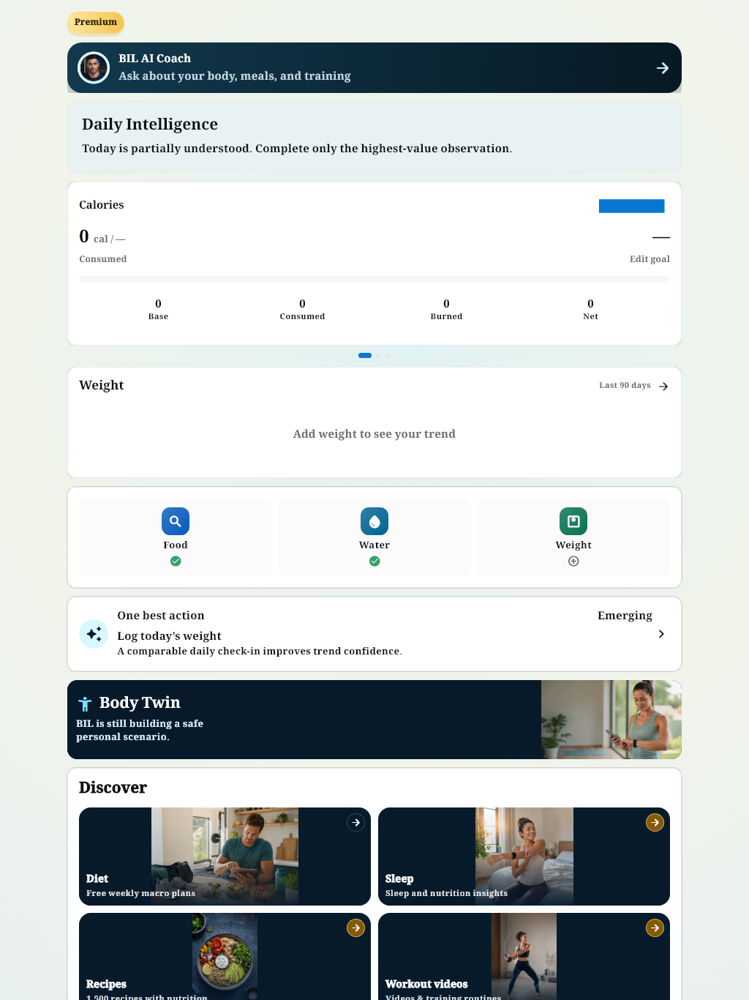
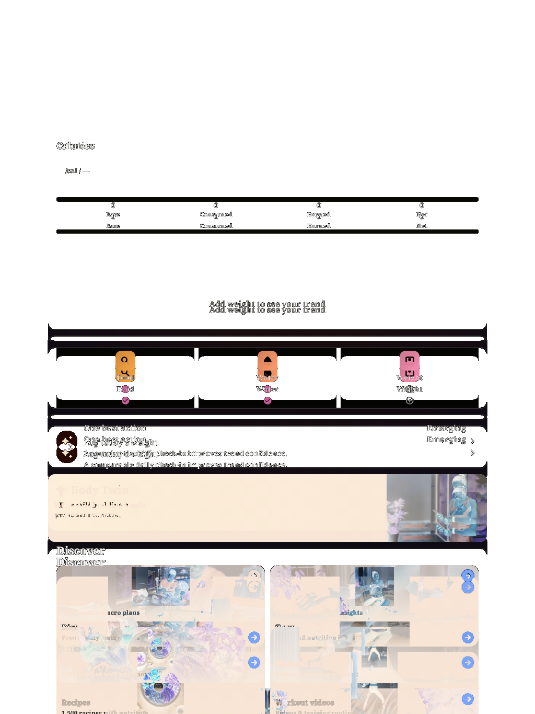

Light1024: نفس 0 واختبارالبيانات الفارغة؛ صفالقيم والWeight وأزرارFood-Water-Weight وDiscover تحركت مع مصدرالبطاقة الأحدث؛ ليستزيادة2px وحدها. Current actual reviewed visually with its master/diffs and functional content intact. Source intentional route-local calm scope / reviewed dashboard source implementation; no removal of controls/values, no tofu, no clock rollback. Protected Home: checked against source08631043 and docs/qa/BIL_DASHBOARD_OWNER_APPROVED_VISUAL_20261009_AR.md implementation intent (not a previous visual certificate). Added cal unit, reference counter geometry, Food/Water/Weight and contain-fit Discover preserve current intended implementation; no Home code modified. Golden benchmark does not show bottom bar; its five icons are verified separately in contracts/production captures.
Each actual is the fresh pre-promotion Flutter output, byte verified against the individually approved baseline. Original master and both diffs retained. Narrow case PASS.


